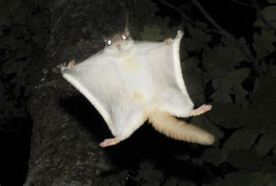
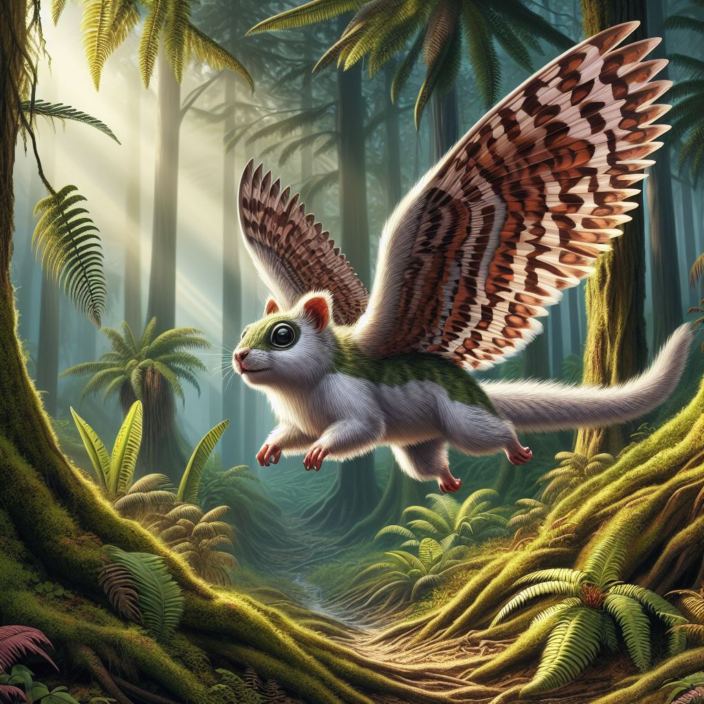

Das faszinierende Flughörnchen
Unser Zoo ist stolz darauf, das atemberaubende Flughörnchen zu präsentieren. Diese wunderbaren Kreaturen begeistern Besucher mit ihren flinken Bewegungen und ihrem einzigartigen Flugverhalten. Als Bewohner der Baumkronen in den Regenwäldern sind Flughörnchen ein Symbol für Anmut und Freiheit.
Ein Blick in die Vergangenheit: Das urzeitliche Flughörnchen
Entdecken Sie das geheimnisvolle urzeitliche Flughörnchen, eine Kreatur aus längst vergangenen Zeiten. Diese faszinierenden Geschöpfe sind ein Beweis für die Vielfalt der Evolution und bieten Einblicke in die Vergangenheit unseres Planeten. Ihre Existenz über Millionen von Jahren hinweg öffnet Türen zu den unerforschten Geheimnissen der Geschichte.
Mehr über Flughörnchen
Flughörnchen sind kleine Säugetiere, die zur Familie der Gleit- und Gleithörnchen gehören. Sie sind in den tropischen Regenwäldern Asiens beheimatet und zeichnen sich durch ihre faszinierende Fähigkeit zum Gleiten aus. Diese agilen Tiere nutzen ihre Hautfalten, um von Baum zu Baum zu gleiten und so nach Nahrung zu suchen oder Feinden zu entkommen. Flughörnchen sind wichtige Bestäuber und Samenverbreiter in ihren Lebensräumen und spielen eine entscheidende Rolle im Ökosystem der Regenwälder. Trotz ihrer faszinierenden Eigenschaften sind einige Arten von Flughörnchen aufgrund von Lebensraumverlust und illegaler Jagd bedroht.